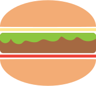

All of the recipes in this book rely on your uneaten prepared foods and a few of these “essential” items. This list is a stripped-down, bare-minimum compilation of ingredients and tools that will make working with leftovers fun and easy without contributing to additional food waste, as many of of these items have long shelf-lives if stored properly.
Grocery shopping should be easy, and usually perimeter/farmer’s market focused - fresh produce, dairy, meats, fish - with visits to the aisles only for your must-haves and when you find yourself running low on pantry necessities.
The items here are a recommendation to help you get started and should assist you in jazzing up the remnants of an uneaten dish and making quick meals, snacks, and baked goods even when leftovers are scarce. Feel free to add or remove items from this list, and replace ingredients with ones that fit your tastes, traditions, and dietary restrictions.
Swapping canned items for fresh foods, for example, is wonderful, but in an effort to prioritize eliminating food spoilage and adopting a “work with what you have” cooking mentality, foods that last longer are easiest.
Although there are very few listed here, fruits and vegetables are the key to a maintaining a healthy, well-balanced diet. Incorporate them into your diet and always have fresh fruits and veggies of your choice on hand.